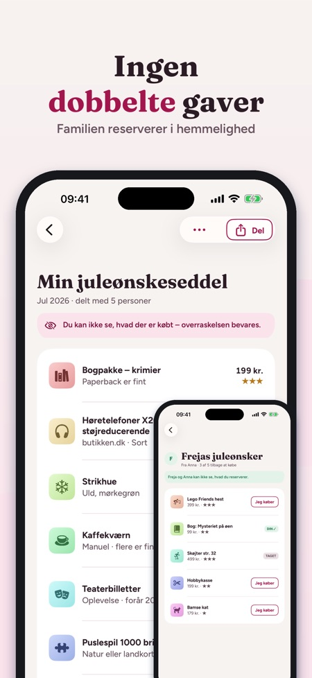
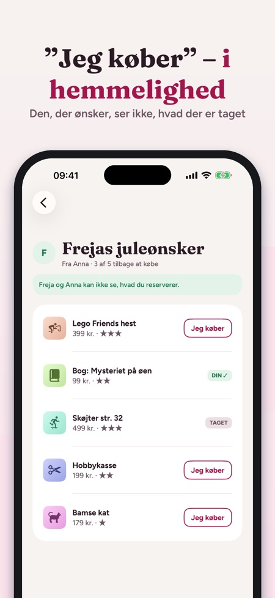
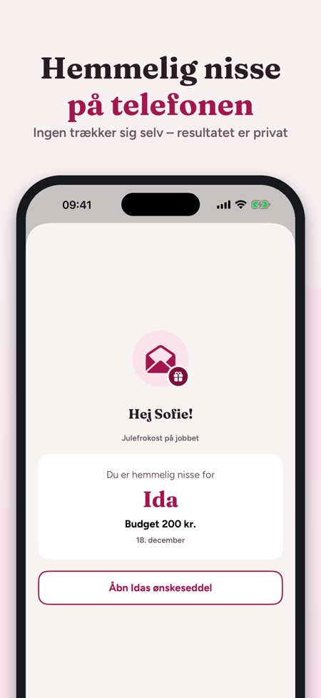

Hemmelig nisse og delt liste.



Ønskesedlen hele familien ser – ingen dobbelte julegaver.
Lav en liste til hver højtid, del den med et link, og lad familien reservere i hemmelighed. Mormor ser, hvad der er tilbage, fætteren ser, hvad der er taget, og du, der ønsker, ser aldrig, hvad der er købt.
TILFØJ ØNSKER HURTIGT
• Indsæt et link fra en hvilken som helst butik – titel og billede hentes én gang
• Del direkte fra Safari eller en butiksapp: "Føj til ønskeseddel"
• Eget foto eller bare tekst
• Pris, farve/størrelse, antal, hvor gerne (en til tre stjerner), "flere er fint" og en note til familien
DEL MED FAMILIEN
• Inviter via Beskeder, WhatsApp eller e-mail – iCloud-deling, ingen konto nødvendig
• De, der har appen, ser listen live og trykker "Jeg køber"
• Den, der ønsker, ser ikke, hvad der er reserveret: overraskelsen består
• Når to reserverer det samme, går det til den, der var først
• Uden appen: send listen som billede eller tekst
FAMILIEN OG AT KØBE
• Alle lister, der er delt med dig, samlet pr. person og med næste dato
• Alt, hvad du skal købe, ét sted: reserveret, købt, pakket ind, givet
• Budget pr. person
HØJTIDER OG PÅMINDELSER
• Jul, fødselsdage, navnedage, bryllupper, konfirmation, dåb, studenterfest og egne datoer
• Påmindelse 14 dage før – med hvor mange ønsker der er tilbage
HEMMELIG NISSE
• Tilføj deltagere, par, der ikke må trække hinanden, budget og dato
• Lodtrækningen sker på telefonen, og ingen trækker sig selv
• Hver får sit resultat som et privat link, der også åbner uden appen – arrangøren ser ikke lodtrækningen i appen
• Eller send telefonen rundt og vis én ad gangen
BØRNENES LISTER
• Lav lister til børnene – kun et fornavn, ingen konto til barnet
KØB
3 egne lister og alt om at give (dele, reservere, At købe, budget) virker uden køb, ligesom lodtrækning til hemmelig nisse for op til 5 personer. Ét engangskøb giver fuld adgang: ubegrænsede lister, flere lister til børnene, hemmelig nisse for større grupper, gaveidéer og eksport som PDF. Købet gælder hele familien via Familiedeling. Intet abonnement, ingen reklamer.
PRIVATLIV
Listerne gemmes på dine enheder og i din iCloud. Appen sender anonym brugsstatistik via Google Analytics for Firebase (f.eks. hvilke skærme og knapper der bruges, køb i appen og omtrentligt land), som du kan slå fra i Indstillinger.